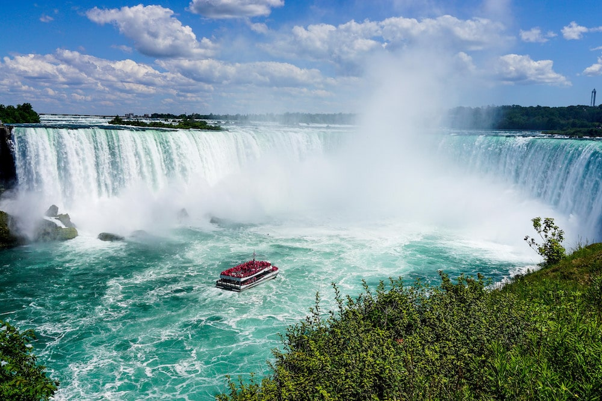
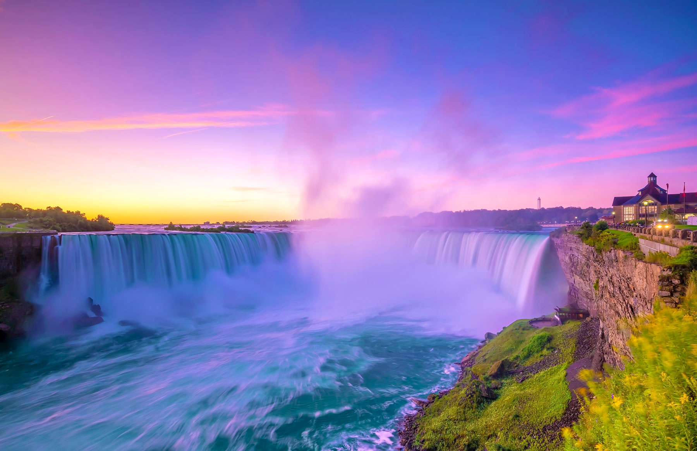
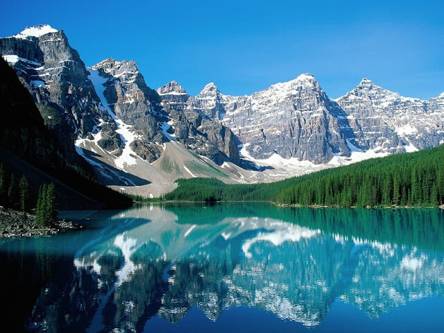
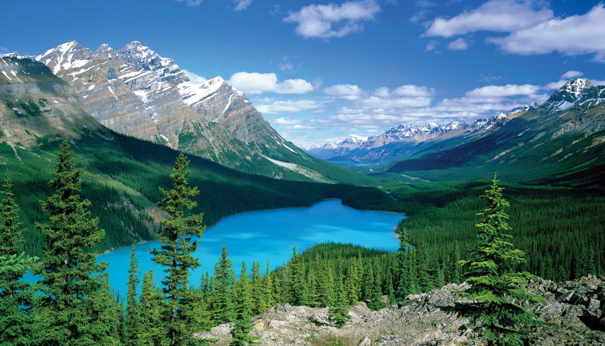
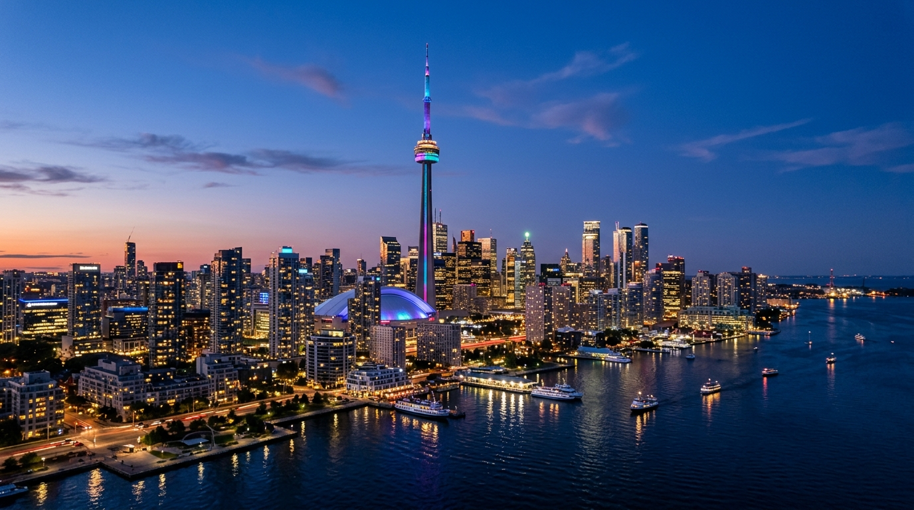
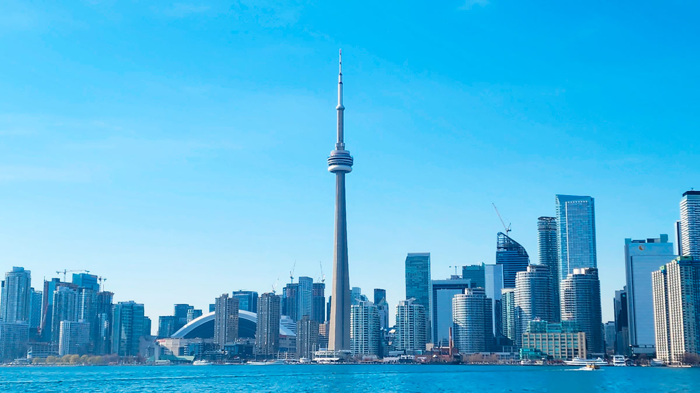
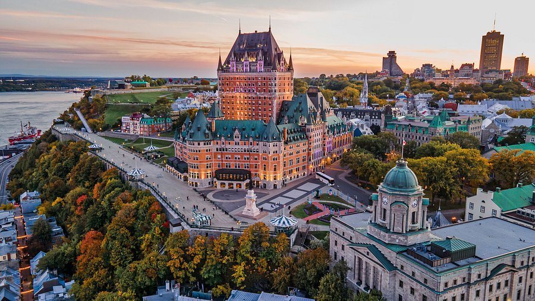
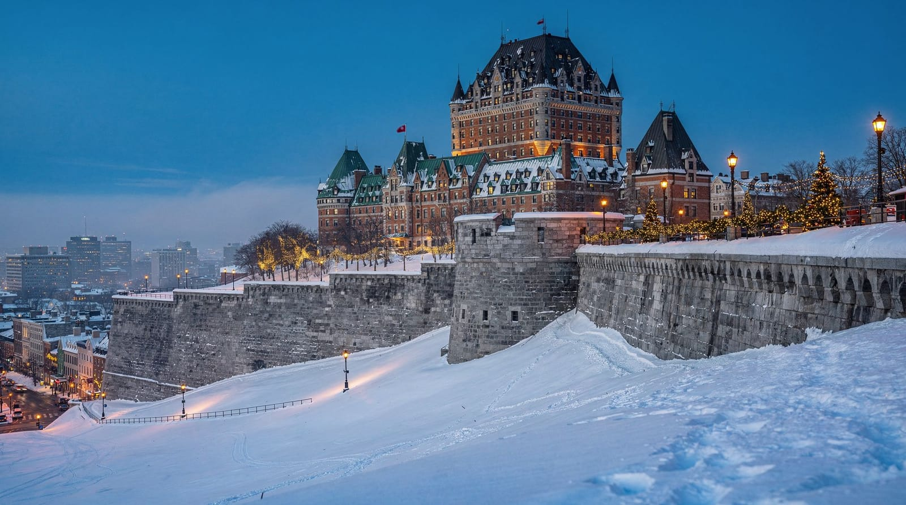
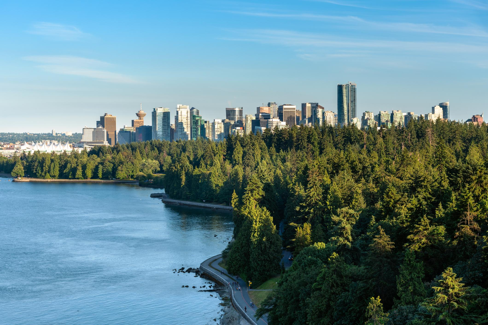
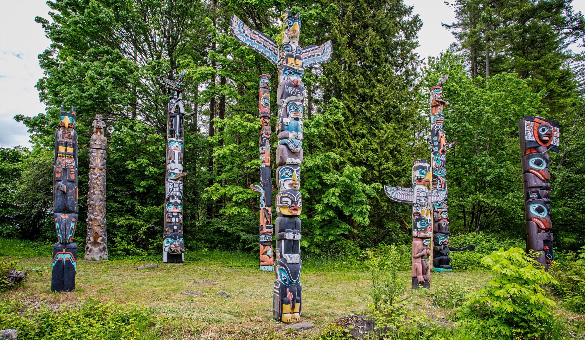

5 Pontos turísticos Canadenses
O Canadá é um destino que surpreende pela diversidade de paisagens, pela mistura de culturas e pela possibilidade de conhecer, em uma mesma viagem, metrópoles modernas, cidades históricas, montanhas imponentes e algumas das paisagens naturais mais famosas do mundo. Para quem sai do Brasil pela primeira vez rumo ao país, cinco lugares merecem atenção especial: as Cataratas do Niágara, o Parque Nacional de Banff, a CN Tower, o centro histórico de Quebec e o Stanley Park, em Vancouver.
Cataratas do Niágara, Ontário

As Cataratas do Niágara estão entre as atrações naturais mais conhecidas da América do Norte. Localizadas na fronteira entre o Canadá e os Estados Unidos, impressionam pelo volume de água, pelo barulho das quedas e pela névoa que se forma ao redor delas.
Para muitos brasileiros, acostumados a conhecer grandes cachoeiras em meio à vegetação tropical, Niágara oferece uma experiência diferente: as quedas são acompanhadas por uma estrutura turística desenvolvida, mirantes próximos e passeios que permitem observar a força da água de vários ângulos.
Entre as experiências mais interessantes estão:
- Observar de perto as famosas Horseshoe Falls, a maior das três principais quedas.
- Fazer um passeio de barco durante a temporada de operação para chegar próximo à cortina de água.
- Visitar os mirantes e caminhar pela Niagara Parkway.
- Apreciar a iluminação noturna das cataratas, quando disponível.
Quanto tempo reservar: um dia inteiro, ou dois dias para explorar a região com mais tranquilidade.
Melhor época: do fim da primavera ao início do outono, especialmente entre maio e setembro, quando há mais atividades ao ar livre em funcionamento. O inverno também oferece paisagens diferentes, com gelo e neve, mas exige mais preparação.

Parque Nacional de Banff, Alberta

O Parque Nacional de Banff é um dos destinos mais impressionantes para quem deseja conhecer a natureza canadense. Situado nas Montanhas Rochosas, reúne lagos de águas azul-turquesa, montanhas, florestas, trilhas e uma rica vida selvagem.
A paisagem parece muito diferente da encontrada na maior parte do território brasileiro. Em vez de florestas tropicais e montanhas cobertas por vegetação densa, o visitante encontra picos rochosos, água de coloração intensa e, dependendo da estação, neve nas montanhas.
Durante a visita, vale considerar:
- Caminhadas por trilhas adequadas ao seu nível de preparo físico.
- Passeios pelas margens dos lagos e sessões de fotografia.
- Visita à cidade de Banff, com restaurantes, lojas e vistas das montanhas.
- Observação responsável da fauna local, mantendo distância dos animais.
Quanto tempo reservar: três dias, idealmente com base na cidade de Banff ou em outra hospedagem da região.
Melhor época: de junho a setembro para aproveitar trilhas e lagos em condições geralmente mais favoráveis. No inverno, o destino se transforma em uma região de esportes na neve. A disponibilidade de acessos e transportes varia conforme a estação.

CN Tower, Toronto

A CN Tower é um dos principais símbolos de Toronto e uma referência da arquitetura canadense. A torre oferece vistas panorâmicas da cidade e do Lago Ontário, permitindo observar a dimensão da metrópole de um ponto privilegiado.
Para brasileiros que nunca estiveram no Canadá, Toronto é uma oportunidade de conhecer um lado mais urbano e cosmopolita do país. A cidade reúne bairros multiculturais, restaurantes de diferentes nacionalidades, museus, áreas comerciais e uma orla que convida a passeios.
Entre as experiências mais interessantes estão:
- Subir aos observatórios para contemplar o horizonte da cidade.
- Caminhar sobre o piso de vidro, para quem se sente confortável com altura.
- otografar o skyline e o Lago Ontário.
- Combinar a visita com um passeio pela região central e pela orla de Toronto.
Quanto tempo reservar: dois dias para conhecer a torre e explorar algumas das principais áreas da cidade.
Dica para o visitante: em dias claros, a vista é especialmente interessante. Vale verificar a previsão do tempo e os horários de visita antes de comprar os ingressos.

Vieux-Québec, cidade de Quebec

O Vieux-Québec é o centro histórico da cidade de Quebec, conhecido pelas ruas de pedra, construções históricas, muralhas e forte influência francesa. É um dos lugares mais interessantes para compreender a herança cultural francófona do Canadá.
A atmosfera lembra algumas cidades históricas europeias, mas está localizada na América do Norte. Caminhar pela região é uma oportunidade de conhecer uma parte do Canadá em que a língua francesa e as tradições locais têm grande presença.
Entre os destaques estão:
- O Château Frontenac, um dos edifícios mais emblemáticos da cidade.
- O bairro Petit-Champlain, com ruas charmosas, lojas e cafés.
- As muralhas e construções históricas do centro antigo.
- Os restaurantes que apresentam pratos da culinária quebequense.
Quanto tempo reservar: dois dias, suficientes para caminhar pelo centro histórico, conhecer os principais pontos e experimentar a gastronomia local.
Melhor época: verão e início do outono são ótimos para passeios a pé e eventos culturais. No inverno, a neve transforma a cidade e cria uma atmosfera bastante diferente, mas é necessário levar roupas adequadas ao frio.

Stanley Park, Vancouver

O Stanley Park é um grande parque urbano situado junto à orla de Vancouver. Suas trilhas, ciclovias, áreas arborizadas e vistas do oceano e das montanhas fazem dele uma das atrações mais agradáveis da cidade.
A cidade combina uma estrutura urbana moderna com uma paisagem natural muito presente. Para quem está acostumado com grandes centros brasileiros, pode ser interessante observar como o oceano, os espaços verdes e as montanhas se integram à experiência cotidiana da cidade.
No Stanley Park, vale a pena:
- Caminhar ou pedalar pela Seawall, acompanhando a orla.
- Conhecer os totens indígenas e aprender sobre a presença e a história dos povos originários.
- Aproveitar os mirantes para fotografar o oceano, as montanhas e o horizonte urbano.
- Fazer um piquenique ou simplesmente descansar em meio à natureza.
Quanto tempo reservar: um dia para conhecer o parque e parte da orla. Com mais tempo em Vancouver, vale explorar também outros bairros e atrações da cidade.
Melhor época: o fim da primavera e o verão costumam favorecer as atividades ao ar livre. Vancouver tem clima diferente do interior do país e pode apresentar períodos chuvosos mesmo fora do inverno.
